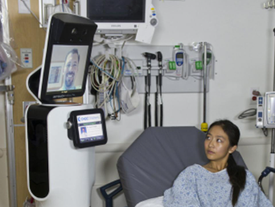

1980
Robô Puma 560.
V1
Marcelo Bracet
João Victor Carneiro
Carolina Dornelas
V2
Rayssa Montecchiari
Victor Hugo
A robótica na saúde combina tecnologia avançada e medicina para melhorar o atendimento.
Robô Puma 560.
Sistema Robótico AESOP
Da Vinci Surgical System
IA e robôs autônomos
Robôs de desinfecção e telemedicina.
Cirurgias assistidas por IA, robôs de reabilitação e diagnósticos autônomos.
para tratamento de doenças
Da Vinci Surgical System e Mako Robotic-Arm Assisted Surgery
Da Vinci Surgical System é um dos robôs cirúrgicos mais avançados e utilizados no mundo. Ele permite que o cirurgião controle braços robóticos com movimentos precisos a partir de um console, usando uma câmera 3D para visualização detalhada.
O Mako Robotic-Arm Assisted Surgery é usado para procedimentos ortopédicos, como substituição de joelho e quadril. Ele combina a análise de imagem pré-operatória com a assistência robótica para melhorar a precisão do procedimento.
Lokomat e ReWalk
O Lokomat é um robô de reabilitação utilizado para ajudar pacientes com dificuldades de locomoção. Ele é comumente usado em fisioterapia para pacientes com lesões na medula espinhal ou após um AVC.
O ReWalk é um exoesqueleto robótico usado para ajudar pessoas com paralisia nas pernas a caminhar novamente. Ele é controlado por um sistema de sensores e movimentos corporais do paciente.
Empresa de neurotecnologia fundada por Elon Musk em 2016.
Utiliza eletrodos ultra-finos ("fios") implantados no cérebro para captar e transmitir sinais neurais, viabilizando controle preciso de dispositivos externos.
Facilitam consultas remotas e monitoramento de pacientes.
A DeepMind, divisão da Alphabet, desenvolveu sistemas de IA avançados capazes de diagnosticar doenças oculares e renais com maior precisão.
Plataforma de IA analisa exames de imagem (como tomografias e ressonâncias magnéticas) para detectar sinais de doenças como pneumonia, osteoporose e doenças cardíacas.
A coleta e processamento de dados médicos por robôs e IA levantam preocupações sobre a privacidade dos pacientes. Para evitar vazamentos ou uso indevido, é necessário seguir diretrizes rigorosas de segurança.
Com a crescente autonomia de robôs e IA em decisões médicas, surge a questão de quem é responsável por erros – o robô, o programador ou o médico supervisor.
O uso crescente de robôs na medicina pode afetar a relação médico-paciente, criando uma sensação de desumanização que impacta confiança e comunicação.
Apesar dos avanços na robótica aplicada à saúde, existem desafios significativos a serem superados.
O alto custo dos robôs limita sua acessibilidade, especialmente em hospitais menores e em países em desenvolvimento.
Reduzir os custos de fabricação e manutenção é essencial para a adoção ampla da tecnologia.
Garantir a segurança e confiabilidade dos robôs em contextos clínicos é um desafio fundamental.
Isso exige avanços contínuos em sistemas de controle, redundância tecnológica e prevenção de falhas para evitar riscos aos pacientes.
A aceitação dos robôs por parte de profissionais.
Investir em treinamento especializado é fundamental para ajudar os profissionais a se adaptarem a essas novas ferramentas tecnológicas.
A robótica na saúde está revolucionando a medicina, oferecendo novas oportunidades para tratamento e cuidado dos pacientes. A evolução contínua das tecnologias promete um futuro com procedimentos ainda mais seguros e eficazes.
(Feedbacks Construtivos ou algo que possa colaborar com nossa apresentação)
Voltar ao primeiro slide